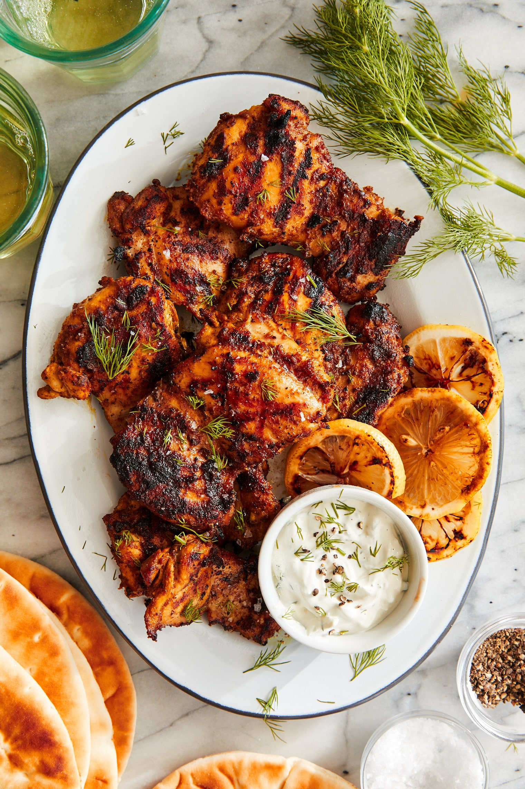

Chicken Shwarma

Description
Another bussin Trader Joe's meal comes from their marinated Shwarma chicken thighs. This goes well with many things, but you can make a great meal by combining with some garlic naan, hummus, tzaziki, and vegetable of your choice.
Ingredients
- 3.5 pounds Trader Joe's marinated Shwarma chicken thighs
- 1 container hummus cooked bacon
- 1 container tzaziki
- 2 bags garlic naan
- 2 containers Persian cucumber (or vegetable of your choice)
Steps
- Cook chicken in the instant pot (with enough water to cover the chicken) on high for 18 minutes.
- Wash, peel, and slice cucumbers
- When chicken finishes, let natural release for 10 minutes, then release the pressure
- Shred the chicken
- Portion chicken, veggies, hummus, and tzaziki, then serve with toasted naan